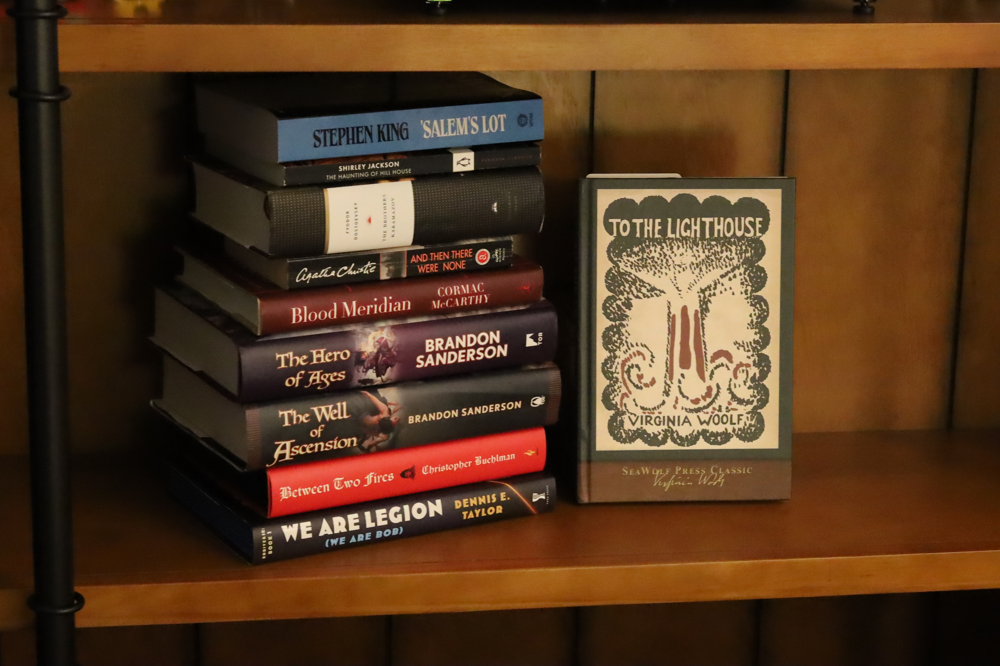
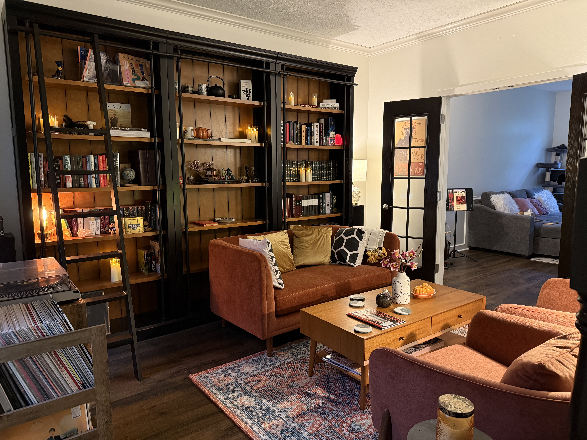

I have been hearing a lot of research in the news that people are reading less now than they were decades ago. In this post I will explore the changes I have made in my own life that have resulted in me reading more than ever before.
The title of this post is admittedly tongue-in-cheek. But in a way it's not. While most of us "know" how to read, we don't necessarily know how to create an environment which is conducive to reading.
I have found that in my own life, having the proper reading environment is key. Previously, after I finished a full day of work, I crashed on the couch and quickly fell into my default habit of watching TV. Often I would re-watch the same show I had seen a million times. Usually this was coupled with scrolling Hacker News over and over again. I wasn't happy with this. At the same time, I also didn't have the desire to change my ways.
After wasting a considerable number of evenings on the same activity—one that I did not find fulfilling—I finally came to a point where I wanted to fix this.
Over the past several years, I have been trying to force myself to get into the habit of reading. What I believe had been my primary blocker was the lack of a proper reading space in my house. Let me explain.
I believe that humans are inherently lazy. This is sensible from an evolutionary standpoint. Why spend additional calories if calories are hard to come by? This, however, comes at a considerable cost to us in a world where calories are plentiful, but our time is very limited. In my particular case, my house had been furnished and decorated in a way such that the TV was the primary focus. It dominated the living room. All furniture faced the TV, and was therefore in direct servitude of the TV. Of course, the first thing I would do after a long day was turn on the TV! I would have been fighting against my home's entire interior design otherwise!
What I needed was a reading space. I first started by moving a chair to the corner of the living room. This worked, but it didn't quite feel cozy enough. Having the TV looming over me while getting through a book was not ideal. What I truly wanted was a room dedicated to reading. I needed a library.
The front room in our house has been mostly empty the entire time we have lived here. I had been dreaming of setting up a library there ever since we first viewed the house. It took quite a lot of convincing, but after finally getting permission from my wife, I ordered the bookcases and furniture. The library of my dreams had finally come true!

I found that having a space dedicated just to reading, one with no screens at all, was the environment I needed to make reading feel cozy. I naturally gravitate to this room after work. And because the room is centered on books and magazines, I tend to pick up a book rather than watch a video. I keep the latest issue of The New Yorker on the coffee table. This is a nice thing to pick up for a quick read instead of scrolling on the phone. I also have my old record player here so I don't have to look at my phone to put on music. A CD player or dedicated music player would also work nicely for this purpose.
I have found that merely having an environment so conducive to reading has entirely changed my daily habits. Instead of vegging out watching TV while also staring at my phone, I now read a book a month on average.
It doesn't take much to get into reading. Just a small change in your everyday environment, and a desire to do so. You don't need to read Dostoevsky to improve your life. Just make a cozy reading environment, and pick up a book that you actually like. The end.
P.S. It is not lost on me that this approach assumes you have enough room in your home to dedicate a space to reading. I acknowledge that is a luxury not everyone has. However, even in smaller homes, I believe that one can take steps to arrange an environment that is conducive to reading. I also believe that doing so will lead you to spending time on more enriching activities than vegging out watching TV, YouTube, or TikTok.
This blog is about whatever I find interesting at this very moment. I'll post how-to articles on occasion and various lessons that I've learned in my career.
I am a software developer from Des Moines Iowa. I graduated from the University of Iowa with a B.S. in Computer Science.
I am interested in math, compilers, and interpreters, and I always strive to understand how various systems work from the ground up.
The languages I use most often include
I like working in a UNIX or Linux environment.